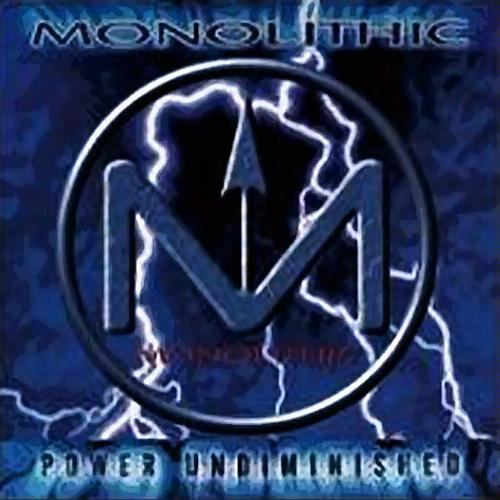
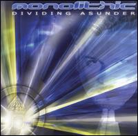
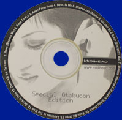

|

|
Power Undiminished (2000)
- 1. Arms
- 2. The Sound of Tears
- 3. 0406
- 4. Unchain
- 5. Window of Faith
- 6. Redemption
- 7. Ionic
- 8. Fiber-Optic Rhythm (Featuring music by Neuroactive)
- 9. Mind
- 10.Paradigm Shift
- 11.Power Undiminished (Arms Finale)
- 12.Bonus Track: "Gift" by Zeta (from album Unfinished)
- 13.Hidden: How Trite
|
|

|
Dividing Asunder (2002)
- 1. Silent Whisper
- 2. Lulling Us to Sleep
- 3. September
- 4. Goodbye (For Now)
- 5. House of Joy
- 6. In Light of the Dark
- 7. Don't Lose Your Head
- 8. Flame
- 9. Maxim
- 10.Dividing Asunder
- 11.Arms (LPT's Sunrise Mix)
|
|

|
Otakucon (2005) - Limited release, not widely known as a full album.
- 1. Arms (Massiva Mix)
- 2. Free To Fly
- 3. Away from Here
- 4. Devil In Me
- 5. Deeper and Deeper
- 6. Lulling Us 2 Sleep (System22 Mix)
- 7. Murder Weapon
- 8. Radar
- 9. Spped Demon
- 10.Push Me Over
- 11.Laughing In The Rain
- 12.Octane High
- 13.Dark AM
- 14.I'm Free
|